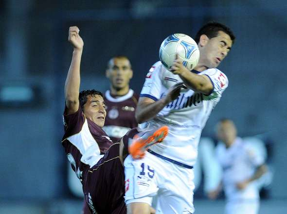
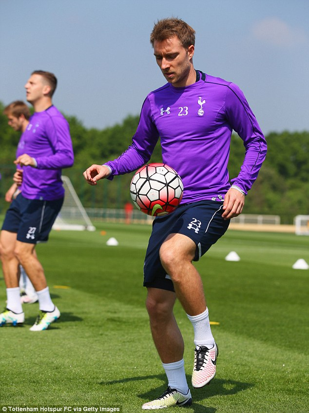
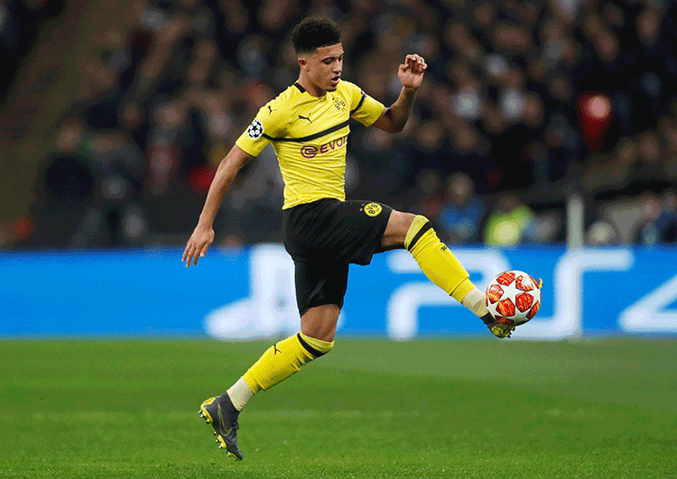
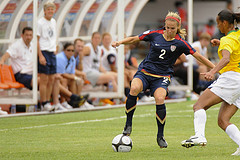

To do a ball control in the match, there are 4 main ways to do.
The first way is body ball control. We should lay back our body lightly for ball control.

The second, we should use our thigh to do ball control.

The third, we can use inside foot or outside foot to do ball control, this is the most common way in the football match.

The forth, we can also use our foot to do ball control, this skill i s more common in fustual.
